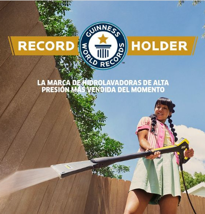
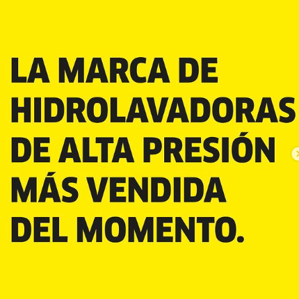

Kärcher Establece un Nuevo Récord Guinness
Un Logro Extraordinario!
La compañía alemana, líder en soluciones de limpieza del hogar y la industria, accede al libro de récords mundiales.
Desarrollada por Alfred Kärcher en 1950 y adaptada para uso doméstico en 1984, la hidrolavadora de alta presión se ha convertido en la solución insignia de la marca.
Para la tecnología avanzada de limpieza no existen límites. Karcher, líder mundial en soluciones de limpieza para el hogar y la industria, conquistó el Récord Guinness como la marca de hidrolavadoras de presión más vendida del mundo.
Con este ingreso al histórico libro de récords, la compañía alemana confirma su liderazgo en la industria de limpieza, gracias a la calidad, durabilidad e innovación de su solución estrella.



La compañía alemana, líder en soluciones de limpieza del hogar y la industria, accede al libro de récords mundiales.
Desarrollada por Alfred Kärcher en 1950 y adaptada para uso doméstico en 1984, la hidrolavadora de alta presión se ha convertido en la solución insignia de la marca.
Para la tecnología avanzada de limpieza no existen límites. Karcher, líder mundial en soluciones de limpieza para el hogar y la industria, conquistó el Récord Guinness como la marca de hidrolavadoras de presión más vendida del mundo.
Con este ingreso al histórico libro de récords, la compañía alemana confirma su liderazgo en la industria de limpieza, gracias a la calidad, durabilidad e innovación de su solución estrella.
Este récord demuestra el compromiso de Kärcher con la excelencia y la innovación. Gracias a sus avanzadas soluciones de limpieza, la marca ha logrado lo que parecía imposible, consolidándose como líder en la industria.
Detalles del Récord
Este hito es un testimonio de casi 90 años de dedicación, innovación y liderazgo en el mundo de la limpieza. Desde que Alfred Kärcher lanzó la primera hidrolavadora de agua caliente en 1950, hemos evolucionado, ofreciendo soluciones adaptadas a cada necesidad y sector, siempre persiguiendo la excelencia para nuestros consumidores. 🚀
Este logro no solo refleja la eficacia de sus productos, sino también el impacto positivo que tiene la tecnología de Kärcher en diversas industrias y en el hogar.